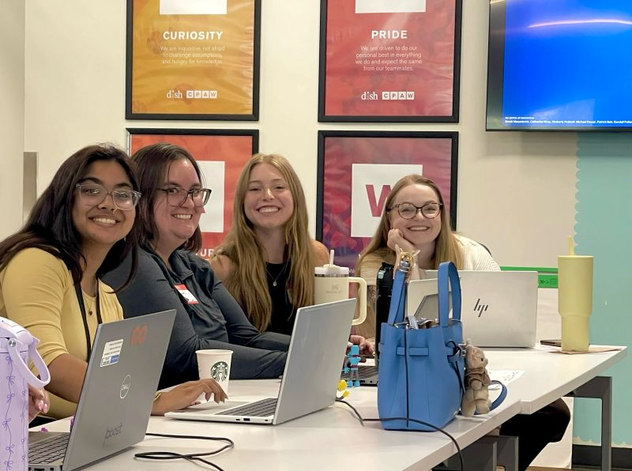
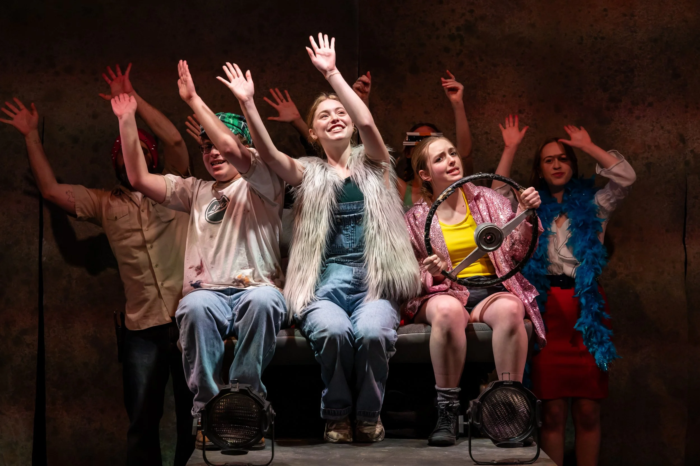
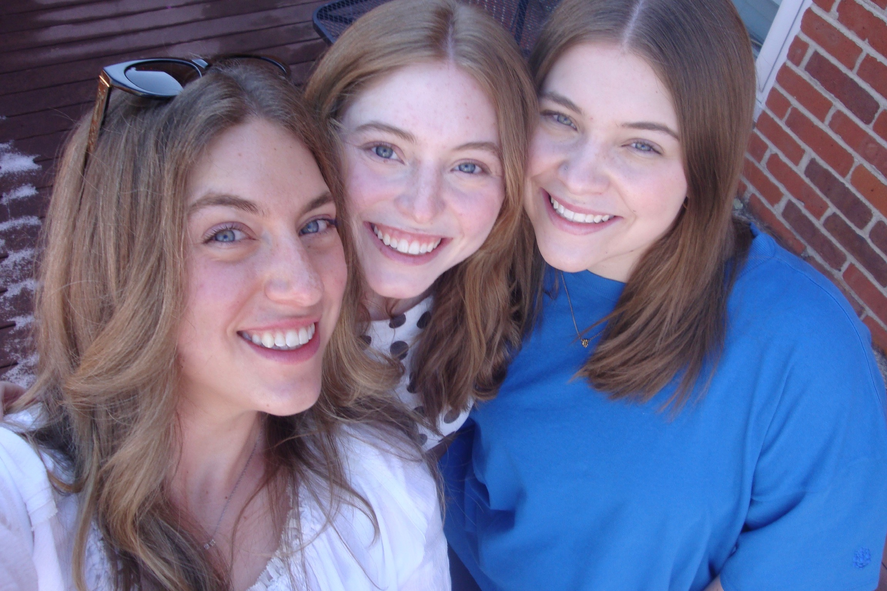
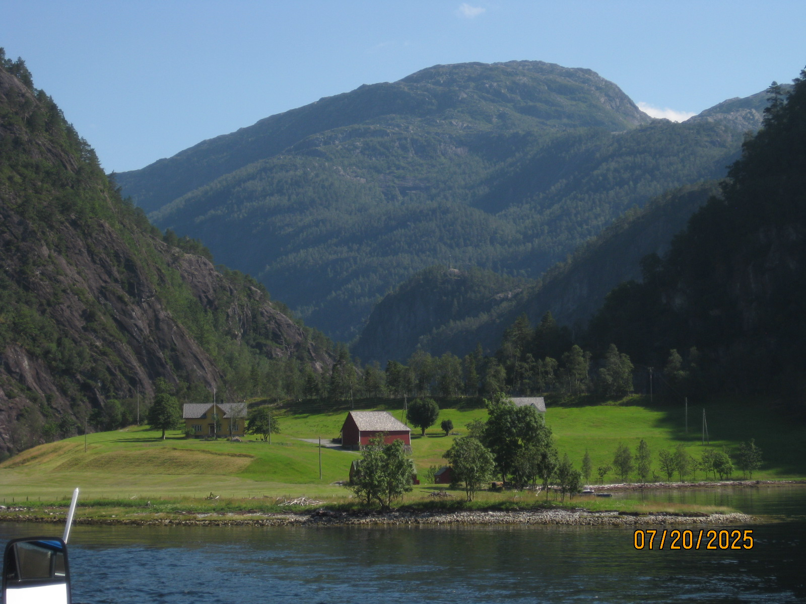

About Me
I am a young creative technologist who gets a kick out of untangling messy business problems. I love finding creative solutions to weird challenges, and I thrive on the fact that my work is constantly shape-shifting. I am also a massive advocate for WCAG accessibility, which means my brain is permanently cursed to notice every single time it’s missing in the wild. It’s a little annoying, but it definitely keeps me motivated to build better things.
My favorite projects are the ones that actually make life easier or a little more fun. Just this week, my workload spanned from coding a golf game and building an interactive clickthrough, to setting up a personal Kanban board and whipping up a custom HTML/CSS/JS infographic maker just so my non-designer coworkers wouldn't have to suffer through formatting headaches. I also happen to be an actress, which makes me unexpectedly great at navigating stakeholder meetings. I tackle those meetings the same way I tackle my to-do list: fueled by a ridiculously fun coffee.
When it comes to my design process, I hold fast to a few undeniable truths: I believe in the sacred power of a good drop shadow, I will make absolutely anything pink if given the opportunity, and I flat-out refuse to clean up my Illustrator artboards after a project is finished.
Because I spend all day designing for screens, my ultimate goal is to pretend computers don't exist when I go home. Off the clock, I am a highly tactile artist—you can usually find me quilting, carving linocuts, or drawing. I am also an avid journaler, and if I mysteriously vanish during my lunch break, I am probably just scribbling away in a notebook somewhere.
The Jobs That Raised Me
June 2026 — Present
Learning Experience Designer
Echostar
Favorite Part:
Training is everyone's least favorite part of their job. In this role, I get to come up with the most creative ways to keep people engaged (ask me about my Dress To Impress inspired training).
2024 — 2026
UX Designer
CU Boulder IT
Favorite Part:
Being able to see the work I did have real impact on the people around me at CU. Everyone got the new Wi-Fi certificate because of my work. Requesting IT support has never been so easy.
2023-2026
Campus Tour Guide
CU Student Ambassadors
Favorite Part:
You know what's powerful? Being a designer and developer at the same time. You know what's even more powerful? Being able to talk about it to large groups of people without flinching. And delivering a joke or two.
Jan. 2026 — May 2026
Web Designer
Jeans To Jurses
Favorite Part:
Getting to provide a service I love for a friend that I admire. I enjoyed seeing my skills pay off in the value other people find in it.
2023-2025
Knight Lab CU Boulder
Website Development
Favorite Part:
Getting to program manage and be my own boss a little bit! Content curation with a small team and my first glimpse into instructional design (I had no idea what was to come with Echostar only a few years later).
2022-2023
Kode With Klossy Scholar
Web Dev & Mobile App Dev
Favorite Part:
I owe my entire career to Karlie Kloss and her program Kode With Klossy, which is a free program for women and non-binary people to learn how to program over the summer. Please have your child apply because too many people are frightened of programming because they've never tried.
2004 — Present
Nerd
Freelance
Favorite Part:
Learning doesn't have to be academic or for your career. This week I learned about how to program neural pathways of flies into Minecraft. Anything is possible if you find it interesting.
What I'm Up To

The Echostar girls at Learning Experience Design conference.
College grad. How about that.

Me acting in Mr. Burns!

My sisters.

Traveling and seeing pretty places.
Norway!